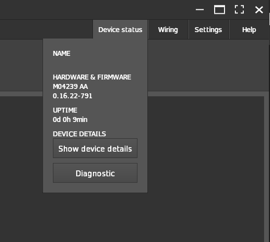

O3R information for debugging
When sending the ifm support team a debug request, please include the information below:
Required O3R system information:
VPU (IPC) hardware information: OVP800, M04239
O3R camera hardware:
O3R225: add serial number
O3R222: add serial number
Any additional hardware connected:
USB thumb drives / SSD
CAN hardware
….
The complete JSON configuration
Required Software version information:
Embedded firmware version: three ways to find this out
Via CLI: requires
jqandifm3dpylibraries, which can be installed from PyPI.$ ifm3dpy dump | jq .device.swVersion.firmware
Via the JSON: use the
getmethod to receive the O3R configuration information formatted in JSON. See how to receive the camera configuration.Via the Vision Assistant: click the “Device Status” button in the top right-hand corner. 
Local host’s (Laptop / Computer) OS: OS and version
ifm3d / ifm3dpy API version
(ifm Vision Assistant version - if iVA is used)
(ROS wrapper version)
Network interface and connectivity:
If the connection between the host and the VPU via ifmVisionAssistant cannot be established, then try the following instructions:
Check the network settings: for instance, try to ping the system on its default / configured IP in a local network.
Disconnect all camera heads and reboot the VPU:
This will allow you to find hardware configuration problems, for example, camera heads connected to the “wrong” ports. Please double-check the configuration doc for details on the hardware connectivity
If step 1 (above) worked try to reconnect one cable at a time to the correct ports as described in the doc above. Please be aware that any hardware change, for example connecting a new head, requires a reboot before it will become available.
Status LEDs and port LEDs
Starting with firmware version 0.16.x the LEDs at the front of the VPU show the correct system information:
STATE LED:
The STATE LED should be green.
The STATE LED will be red if an ERROR is active in the internal diagnosis functionality.
PORT LEDs:
Each Port LED is handled separately. If the connected imager (that is 2D RGB / 3D TOF imager) is registered and ready the LED will turn green
If the LEDs are off:
The imager is not registered by the system, that is connected during live operation. It will only be registered with the next reboot cycle.
The imager’s cable connectivity is incorrect, that is 2D and 3D connected to the same paired deserializer
The imager’s calibration information is still getting downloaded after it was connected for the first time to this VPU.
For additional possible error cases please check the diagnosis information.
How to retrieve diagnosis information:
Diagnosis information can be retrieved via:
Via ifm Vision Assistant
The easiest way to debug a new O3R hardware is to use the ifm Vision Assistant: which can be downloaded [here].
ifmVisionAssistant is a wizard tool provided by the ifm, for configuring and debugging the vision products/sensors. The ifmVisionAssistant tool logs all the diagnosis information required for debugging the system. To get started with the ifmVisionAssistant please refer to this page and to retrieve the diagnosis information via ifmVisionAssistant please refer to this document.
Via ifm3d API
To retrieve the diagnosis information via ifm3d API, please refer Receiving the diagnostic data section in this document.
GitHub platform
It is recommended to report any issues you may encounter while using the product on ifm GitHub repository. The GitHub platform allows the support and development teams to track and manage the issues efficiently. To report an issue via the GitHub repository, refer to this document.
As mentioned before, please include the hardware and software information of the system setup for a better understanding of the problem statement. Besides, in the comment section provide a detailed description of the issue, including any error messages you may have received, steps to reproduce the issue, and any other relevant information.
If possible, please provide screenshots or videos to help illustrate the issue.